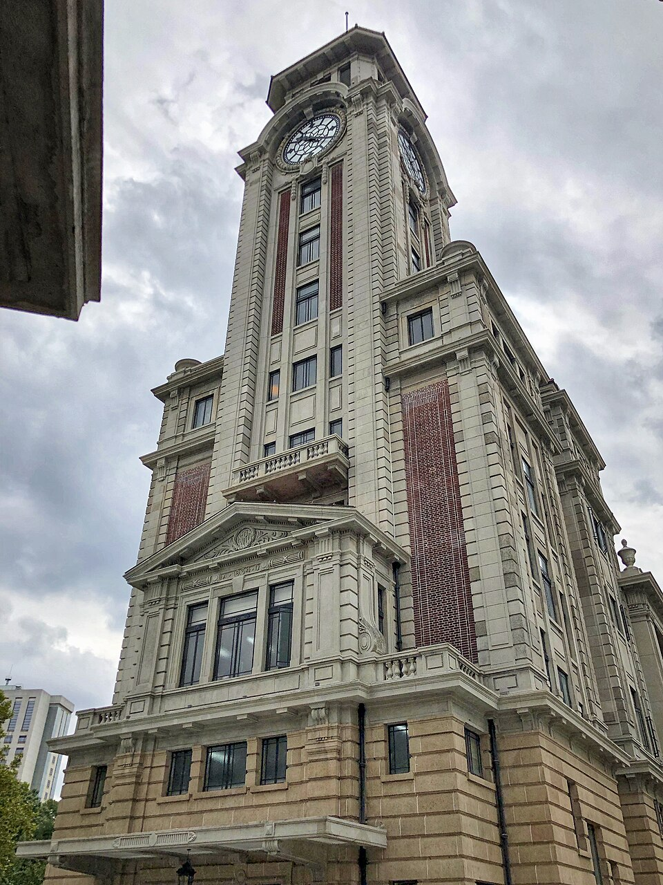

1927–1941. Ипподром и музей
1927–1941。跑马厅和博物馆
Шанхайский русский полк上海俄国团
Шанхайский русский полк собрали 21 января 1927 года из казаков генерала Глебова, когда к сеттльменту шли войска с юга. Русским, единственным в волонтёрском корпусе, платили жалованье. Смотры шли на поле ипподрома, где сейчас Народная площадь; здание клуба 1934 года — Музей истории Шанхая. С 1941 года полк стал отрядом полиции.
1927年1月21日，南边军队逼近租界，格列博夫将军的哥萨克组成了俄国团。万国商团里只有俄国人领薪水。检阅在跑马场地上，那里今天是人民广场；1934年的跑马总会大楼是上海市历史博物馆。1941年起俄国团改成巡捕队。
Наньцзин-силу, 325, район Хуанпу. Здание скакового клуба 1934 года, сейчас Музей истории Шанхая.
黄浦区南京西路325号。1934年的跑马总会大楼，现在是上海市历史博物馆。

Прочитать за минуту一分钟读完
16 января 1927 года совет Международного сеттльмента собрался на срочное заседание: с юга шли войска. Вице-председатель совета Белл предложил генералу Глебову собрать отряд из его казаков. 21 января отряд сформировали. Первым командиром стал капитан 1-го ранга Фомин.
1927年1月16日，公共租界工部局开紧急会议：南边的军队逼近了。工部局副总董贝尔提议格列博夫将军用他的哥萨克组一支队伍。1月21日队伍成立。第一任队长是一级舰长福明。
Узнать подробнее了解更多
К 5 февраля в отряде было больше ста пятидесяти человек, в марте — 23 офицера и 278 нижних чинов. Ядро — казаки Глебова и белые эмигранты. Остальные волонтёры корпуса служили бесплатно, русским платили жалованье.
13 марта 1927 года русский отряд прошёл на городском параде. Белл потом написал, что ни одна часть, кроме русской, такой чести не удостоилась.
Смотры шли на поле ипподрома. В 1935 году собрали полковой оркестр. С 1940 года казармы были в старых трибунах. Поле ипподрома сейчас — Народная площадь и Народный парк. Здание клуба 1934 года стоит, в нём Музей истории Шанхая. Смотры 1927–1928 годов были ещё до этого здания, я их не путаю.
С середины июля по середину ноября 1937 года полк держал участок у Северного вокзала. 16 января 1941 года он стал русским вспомогательным отрядом муниципальной полиции. Когда отряд распустили, источники пишут по-разному. Дом русского зарубежья называет 1947 год.
到2月5日队里有一百五十多人，3月有23名军官和278名士兵。骨干是格列博夫的哥萨克和白俄侨民。万国商团别的志愿兵不拿钱，俄国人领薪水。
1927年3月13日俄国队参加全城阅兵。贝尔后来写信说，除了俄国队，没有一支部队得到这样的荣誉。
检阅在跑马厅的场地上。1935年组了团乐队。1940年起营房在旧看台里。跑马厅的场地今天是人民广场和人民公园。1934年的跑马总会大楼还在，里面是上海市历史博物馆。1927、1928年的检阅比这栋楼早，我不混在一起。
1937年7月中到11月中，俄国团守北站一带。1941年1月16日改成工部局巡捕房的俄国辅助队。什么时候解散，各家写得不一样。俄罗斯侨民之家写1947年。
На карте在地图上
Важно не перепутать别弄混
Музей стоит в здании 1934 года. Смотры 1927–1928 годов шли на поле ипподрома, ещё до этого дома. Белл был вице-председателем совета, не председателем. «40 человек в первый день» я в источниках не нашёл.
博物馆在1934年的楼里。1927、1928年的检阅在跑马场地上，比这栋楼早。贝尔是副总董，不是总董。「第一天四十人」我在资料里没找到。
Вопрос для школьника给同学的问题
Почему совет сеттльмента платил русским, а остальным волонтёрам — нет?
为什么工部局给俄国人发薪水，别的志愿兵却没有？
Что установлено точно已经核对过的
16 и 21 января 1927, Глебов, Фомин, численность в феврале и марте, жалованье, парад 13 марта, Северный вокзал 1937, полиция с 1941. Страницы ниже.
1927年1月16日和21日、格列博夫、福明、2月和3月的人数、薪水、3月13日阅兵、1937年北站、1941年改为巡捕。出处在下面。
Что пока требует проверки还要再核对的
Год роспуска: 1941, 1945 или 1947 — зависит от того, что считать концом. Своего кадра ещё нет.
解散年份：1941、1945还是1947，要看怎么算结束。我自己的照片还没有。
Источники этой страницы这一页的出处
- Шанхайский русский полк — Википедия. 16 и 21 января 1927, Белл (вице-председатель), Глебов, Фомин, парад 13 марта 1927 и письмо Белла, Северный вокзал 1937, полиция с 16 января 1941.1927年1月16日和21日，贝尔（副总董），格列博夫，福明，3月13日阅兵和贝尔的信，1937年北站，1941年1月16日改为巡捕。
- Русский полк Шанхайского волонтёрского корпуса — Дом русского зарубежья. Численность в феврале и марте 1927, жалованье, казармы в трибунах ипподрома с 1940, роспуск в 1947.1927年2月和3月的人数，薪水，1940年起营房在跑马厅看台，1947年解散。
- Shanghai Volunteer Corps — Wikipedia. Все волонтёры служили бесплатно, кроме русских.除了白俄，万国商团都是义务的。
- Shanghai Race Club — Wikipedia. Здание клуба 1934 года; поле ипподрома — нынешние Народная площадь и парк.1934年的跑马总会大楼；跑马场今天是人民广场和人民公园。
- 上海市历史博物馆 — 维基百科. Наньцзин-си, 325, бывшее здание скакового клуба.南京西路325号，原跑马总会大楼。
Рядом по смыслу:意思上相邻的： Кадеты в Шанхае上海的俄国军校生 Сибирская флотилия Старка斯塔克的西伯利亚舰队
Последняя правка страницы: 19 ноября 2026. Это дата правки сайта, не дата исторического события.本页最近一次修改：2026年11月19日。这是网页的修改日期，不是历史事件的日期。